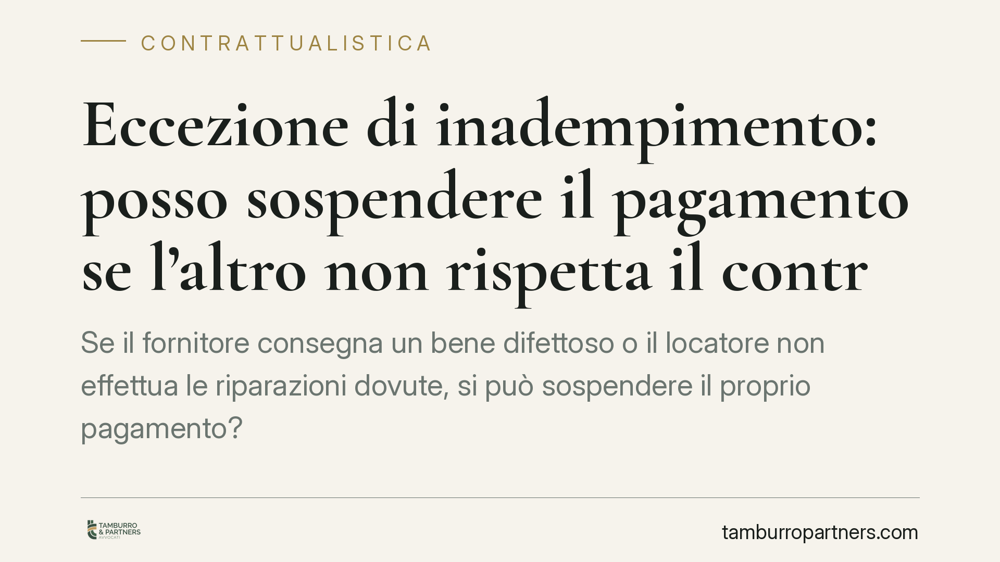

Eccezione di inadempimento: posso sospendere il pagamento se l'altro non rispetta il contratto?
Se il fornitore consegna un bene difettoso o il locatore non effettua le riparazioni dovute, si può sospendere il proprio pagamento? Il Codice Civile lo consente entro precisi limiti attraverso l'eccezione di inadempimento. Vediamo quando lo strumento è legittimo e quando, invece, si trasforma in un inadempimento del quale rispondere.

Il principio: non sono tenuto ad adempiere se l'altro non adempie
Nei contratti a prestazioni corrispettive – dove ciascuna parte deve qualcosa all'altra – vige la regola per cui l'esecuzione delle due prestazioni deve procedere in parallelo. Se una parte non fa la sua parte, l'altra può rifiutarsi di fare la propria.
È questo il senso dell'eccezione di inadempimento (in latino *exceptio inadimpleti contractus*): uno strumento di autotutela che consente di sospendere la propria prestazione in attesa che la controparte adempia.
Inquadramento normativo
La disciplina è contenuta nell'art. 1460 del Codice Civile. La norma stabilisce che, nei contratti con prestazioni corrispettive, ciascun contraente può rifiutarsi di adempiere la sua obbligazione se l'altro non adempie o non offre di adempiere contemporaneamente la propria.
Lo stesso articolo pone però un limite fondamentale: il rifiuto non è ammesso se, avuto riguardo alle circostanze, risulta contrario a buona fede. Non basta quindi un qualsiasi mancato adempimento della controparte per giustificare la sospensione.
Due norme completano il quadro. L'art. 1455 c.c. chiarisce che l'inadempimento rilevante deve avere una certa importanza rispetto all'interesse dell'altra parte: un ritardo o un difetto marginale non legittima la sospensione dell'intera prestazione. L'art. 1462 c.c. disciplina invece le clausole che vietano di opporre eccezioni (*clausole solve et repete*), stabilendone i limiti di validità.
La Corte di Cassazione ha più volte precisato che il giudice deve operare un giudizio di proporzionalità tra i due inadempimenti, valutando se la sospensione sia adeguata rispetto alla gravità della mancanza altrui.
Cosa cambia in concreto per chi si trova in questa situazione
Il punto critico è che l'eccezione di inadempimento non è un diritto "a maglie larghe". Sospendere il pagamento perché la controparte ha commesso una violazione minima espone al rischio di essere considerati, a propria volta, inadempienti.
Alcuni esempi ricorrenti.
- Il conduttore che smette di pagare il canone perché il locatore non ha eseguito una riparazione: la sospensione è ammessa solo se il difetto compromette in modo apprezzabile il godimento dell'immobile. Non ogni disagio giustifica il mancato pagamento del canone intero.
- L'acquirente che riceve merce difettosa: può sospendere il pagamento del prezzo, ma la reazione deve essere proporzionata all'entità del difetto.
- Il committente di un'opera realizzata con vizi: la trattenuta del corrispettivo deve essere commisurata al costo necessario per eliminare i difetti, non estesa all'intero importo dovuto.
Il principio guida resta sempre la buona fede: chi eccepisce l'inadempimento altrui non deve strumentalizzare una violazione modesta per liberarsi di un'obbligazione ben più consistente.
Attenzione alle clausole "solve et repete"
Molti contratti contengono clausole che impongono di pagare prima e contestare dopo. Sono le clausole solve et repete ("paga e poi ripeti", cioè chiedi la restituzione). L'art. 1462 c.c. ne consente l'inserimento, ma il giudice può comunque sospenderne l'efficacia quando ricorrono gravi motivi. Prima di sospendere un pagamento, è quindi indispensabile verificare se il contratto contenga una clausola di questo tipo.
Cosa fare in concreto
- Verificate la gravità dell'inadempimento altrui prima di sospendere la vostra prestazione: un difetto marginale non giustifica il blocco dell'intero pagamento.
- Rispettate la proporzionalità: sospendete solo la quota di prestazione corrispondente alla mancanza della controparte, non l'intera obbligazione.
- Formalizzate per iscritto la contestazione, indicando con precisione la violazione contestata e invitando la controparte ad adempiere.
- Controllate la presenza di clausole solve et repete nel contratto, che potrebbero limitare la possibilità di sospendere il pagamento.
- Conservate ogni prova dell'inadempimento altrui (comunicazioni, fotografie, perizie): in caso di contenzioso l'onere di dimostrare la legittimità della sospensione ricade su chi la invoca.
L'eccezione di inadempimento è uno strumento efficace, ma va maneggiato con misura. Consigliamo di valutare ogni situazione caso per caso, perché la linea tra autotutela legittima e inadempimento colpevole è spesso sottile.
---
*Contributo informativo a cura di Tamburro & Partners - Avv. Giuseppe Tamburro. Non costituisce parere legale.*
Ogni contratto ha il suo equilibrio.
Se vuoi una revisione delle clausole o una redazione su misura, scrivi allo studio. Ti rispondiamo entro un giorno lavorativo.